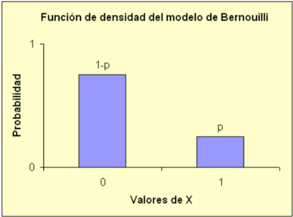
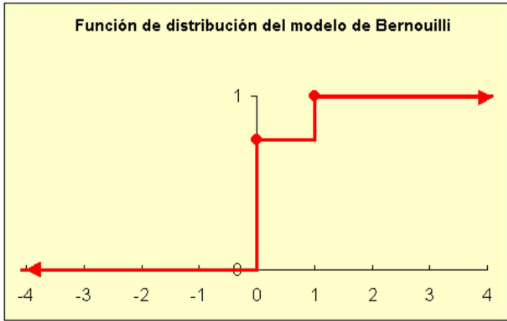
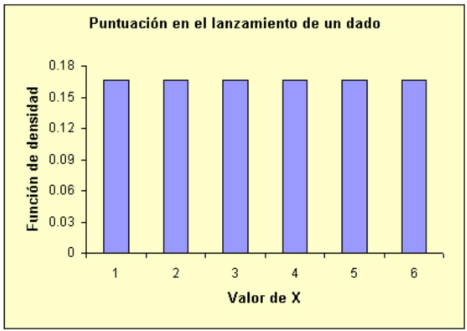
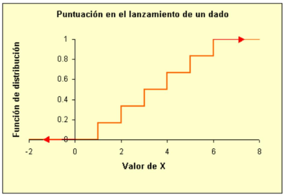
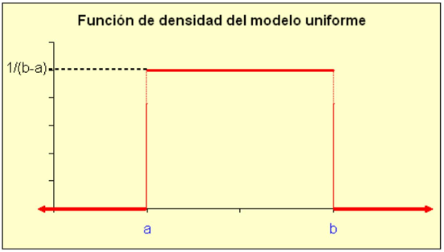
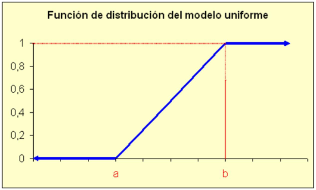

Capítulo 3 Distribuciones Notables
3.1 Distribuciones discretas
3.1.1 La distribución de Bernouilli
Es el modelo discreto más sencillo en que podamos pensar. Hace referencia a situaciones en las que el resultado de un experimento sólo puede ser: se ha dado el suceso \(A\) ó no se ha dado el suceso \(A\). Por ejemplo, en el lanzamiento de una moneda sólo puede darse el suceso sale cara o su complementario no sale cara (sale cruz).
Por lo tanto, definimos la variable aleatoria \(X\) de la siguiente manera:
- \(X=1\) si se ha dado \(A\).
- \(X=0\) si no se ha dado \(A\), es decir, se ha dado el complementario \(A^{c}\).
Si además, conocemos la probabilidad de que suceda \(A\) :
\[ P[A]=p \]
y, por tanto,
\[ P\left[A^{c}\right]=1-p \]
ya podemos definir la distribución de la variable aleatoria \(X\). En estas condiciones diremos que \(X\) sigue una distribución de Bernouilli de parámetro \(p\), que abreviaremos así \(X \sim \operatorname{Bernouilli}(p)\), y su función de densidad se define así:
\[ f(k)=P[X=k]=\left\{\begin{array}{cc} p & \text { si } k=1(\text { se ha dado } A) \\ 1-p & \text { si } k=0\left(\text { se ha dado } A^{c}\right) \end{array}\right\} \]
Gráficamente:

Mientras que la función de distribución será:
\[ F(k)=P[X \leq k]=\left\{\begin{array}{lc} 0 & \text { si } \mathbf{k}<0 \\ \mathbf{p} & \text { si } 0 \leq \mathbf{k}<1 \\ 1 & \text { si } \mathbf{p} \geq 1 \end{array}\right\} \]
Gráficamente:

3.1.2 La distribución Binomial
Al igual que el modelo de Bernouilli, hace referencia a experiencias con resultados dicotómicos (el resultado sólo puede ser \(A\) o \(A^{\mathcal{C}}\) ). Sin embargo en este modelo estamos interesados en la repetición de \(n\) veces una experiencia de este tipo en condiciones independientes.
Tomemos el ejemplo del contaje del número de caras en el lanzamiento \(n\) veces de una moneda regular. Para concretar, vamos a suponer que disponemos de una moneda regular \((P[\) cara \(]=P[c r u z]=1 / 2)\) que lanzamos cuatro veces. Es evidente que, en estas condiciones, la variable X: número de caras en cuatro lanzamientos independientes de una moneda regular es una variable aleatoria discreta que sólo puede tomar cinco posibles valores:
\[ x=0,1,2,3,4 \]
Pasemos ahora a calcular la probabilidad de cada valor (en terminología estadística, vamos a calcular la función de densidad de la variable \(X\) ).
Es evidente que la \(P[X=0]\) es igual a la probabilidad de salgan cuatro cruces seguidas:
\[ P[X=0]=P[c r u z, c r u z, c r u z, c r u z]=\mathrm{P}[c r u z]^{4}=(1 / 2)^{4}=0,0625 \]
ya que la moneda es regular y, por tanto, \(P[\) cara \(]=P[\) cruz \(]=1 / 2\). La \(P[X=3]\) corresponde al suceso de que salgan tres caras ( \(c\) en adelante) y una cruz ( + en adelante). Sin embargo, en este caso tenemos hasta cuatro posibles maneras de obtener dicho resultado, según el orden en que aparezcan las tres caras y la cruz:
| +ccc | \(\mathrm{c}+\mathrm{cc}\) | \(\mathrm{cc}+\mathrm{c}\) | \(\mathrm{ccc}+\) |
|---|
También debería resultar evidente que la probabilidad de cada uno de estos sucesos es la misma:
\[ P[+\mathrm{ccc}]=P[\mathrm{c}+\mathrm{cc}]=P[\mathrm{cc}+\mathrm{c}]=P[\mathrm{ccc}+]=(1 / 2)^{4}=(1 / 2)^{4}=0,0625 \]
de manera que, finalmente, la probabilidad de que salgan tres caras y una cruz es la suma de las probabilidades de los 4 casos anteriores:
\[ P[X=3]=4(1 / 2)^{4}=0,25 \]
Y así podríamos ir calculando el resto de casos. Podemos ver que, en este ejemplo, todos los casos tienen la misma probabilidad \((0,0625)\) y que el número total de casos posibles es 16 . En términos de combinatoria dicho número se obtendría como variaciones con repetición de dos valores (cara o cruz) tomados de cuatro en cuatro (el número de lanzamientos de la moneda):
\[ V R_{2}{ }^{4}=2^{4}=16 \]
En la siguiente tabla se muestran los dieciséis posibles resultados:
| \(k=\) número de caras |
Casos |
|---|---|
| 0 | +++++ |
| 1 | +++c |
| \(++\mathrm{c}+\) | |
| \(+\mathrm{c}++\) | |
| \(\mathrm{c}+++\) | |
| ++cc | |
| \(+\mathrm{c}+\mathrm{c}\) | |
| \(\mathrm{c}++\mathrm{c}+\) | |
| \(\mathrm{c}+\mathrm{c}+\) | |
| cc++ | |
| \(\mathrm{ccc}+\) | |
| \(\mathrm{c}+\mathrm{cc}\) |
Si hacemos uso de nuestros conocimientos de combinatoria, comprobamos que el número de casos para cada posible valor \(k(k=0,1,2,3,4)\) puede calcularse como permutaciones con repetición de cuatro elementos tomado de \(k\) y \(4-k\) :
\[ R P_{4}^{k, 4-k}=\frac{4!}{k!(4-k)!}=\binom{4}{k} \]
y obtenemos finalmente el número combinatorio 4 sobre \(k\). En efecto, para el caso \(k=3\), tendríamos:
\[ \binom{4}{3}=\frac{4!}{3!1!}=4 \]
que son los cuatro posibles casos que nos dan tres caras y una cruz. Finalmente, recordando que todos los casos tienen la misma probabilidad, se construye la siguiente tabla:
| \(k=\) número de caras | Número de casos | \(P[X=k]\) |
|---|---|---|
| 0 | 1 | 0,0625 |
| 1 | 4 | 0,2500 |
| 2 | 6 | 0,3750 |
|---|---|---|
| 3 | 4 | 0,2500 |
| 4 | 1 | 0,0625 |
| Total | 16 | 1 |
3.1.2.1 Los parámetros de la distribución Binomial
La última tabla de la página anterior es, justamente, la función de densidad de nuestra variable \(X\).
| Función de densidad de \(X\) | |
|---|---|
| \(k\) | \(P[X=k]\) |
| 0 | 0,0625 |
| 1 | 0,2500 |
| 2 | 0,3750 |
| 3 | 0,2500 |
| 4 | 0,0625 |
| En otro caso | 0 |
Como hemos visto, para obtener los resultados anteriores, hemos tenido que definir dos valores:
- \(n\) : el número de lanzamientos (repeticiones de la experiencia aleatoria en condiciones independientes), en nuestro caso \(n=4\).
- \(p\) : la probabilidad de que salga cara \((P[c])\), en nuestro caso \(p=1 / 2\).
Se dice, por tanto, que la distribución Binomial depende de dos parámetros: \(n\) y \(p\). En nuestro ejemplo, diremos que \(X\) sigue una distribución Binomial de parámetros \(n=4\) i \(p=1 / 2\). De forma abreviada:
\[ X \sim B(n=4 ; p=1 / 2) \]
En el ejemplo que hemos visto, suponíamos que la moneda era regular y, por tanto,
\[ P[c]=P[+]=1 / 2 \]
Si tenemos una moneda trucada con las siguientes probabilidades:
\[ P[c]=2 / 3 \quad \text { i } \quad P[+]=1 / 3 \]
diremos que en este caso la variable \(X\) : número de caras en cuatro lanzamientos independientes de nuestra moneda trucada sigue una distribución Binomial de parámetros:
\[ X \sim B(n=4 ; p=2 / 3) \]
El problema se nos complica levemente ya que ahora no todos los posibles resultados tienen la misma probabilidad. Veamos dos ejemplos:
- La probabilidad de obtener cuatro caras es:
\[ P[c c c c]=(2 / 3)^{4}=0,1975 \]
- La probabilidad de que el primer lanzamiento sea cara y el resto sean cruces valdrá:
\[ P\left[c^{+++}\right]=(2 / 3)^{\prime}(1 / 3)^{3}=0,0247 \]
Sin embargo sí se cumplirá que la probabilidad de que todos los caso que resulten en el mismo número de caras y cruces tendrán la misma probabilidad. Por ejemplo, para los cuatro casos en los que el número total de caras es 1 y el de cruces 3 :
\[ P[c+++]=P[+c++]=P[++c+]=P[+++c]=(2 / 3)^{\prime}(1 / 3)^{3}=0,0247 \]
Y, por tanto, la probabilidad de obtener una sola cara en el lanzamiento de nuestra moneda trucada será:
\[ P[X=1]=4^{\prime} 0,0247=0,0988 \]
O, generalizando, si \(P[A]=p\) y \(P\left[A^{c}\right]=1-p\) tenemos que
\[ P[X=k]=c(n, k) p^{k}(1-\mathrm{p})^{n-k} \quad \text { si } k=0,1, \ldots, n \]
donde \(c(n, k)\) representa el número de posibles resultados en los que obtenemos \(k\) caras y \(n-k\) cruces en \(n\) lanzamientos. Tal como hemos visto, dicho número se puede calcular como permutaciones con repetición de \(n\) unidades tomadas de \(k\) y \(n-k\).
Todo lo anterior nos lleva a formular el model binoial a traves de la siguiente función de densidad:
\[ f(k)=P[X=k]=\left\{\begin{array}{ll} \binom{\mathbf{n}}{\mathbf{k}} p^{k}(1-p)^{n-k} & \text { si } \quad k=0, \ldots, n \\ 0 & \text { en caso contrario } \end{array}\right\} \]
con lo que la función de distribución se calcularía:
\[ F(k)=P[X \leq k]=\left\{\begin{array}{cc} 0 & \text { si } k<0 \\ \sum_{i=0}^{k}\binom{\mathbf{i}}{\mathbf{n}} p^{i}(\mathbf{1}-p)^{n-i} \\ \mathbf{1} & \text { si } k \geq n \end{array}\right\} \]
3.1.2.2 Propiedades del modelo Binomial
- La esperanza vale \(E(X)=n p\).
- La varianza es \(V(X)=n p(1-p)\).
- Es una generalización del modelo de Bernouilli. En efecto, la Binomial con \(n=1\) (una sola realización) coincide con la distribución de Bernouilli.
- La suma de dos variables aleatorias binomiales independientes con igual parámetro \(p\) también sigue una distribución Binomial:
\[ X_{1} \sim B\left(n=n_{1} ; p=p_{0}\right) \quad \text { i } \quad X_{2} \sim B\left(n=n_{2} ; p=p_{0}\right) \]
Si definimos \(Z=X_{1}+X_{2}\) entonces,
\[ Z \sim B\left(n=n_{1}+n_{2} ; p=p_{0}\right) \]
3.1.3 La distribución de Poisson
Se trata de un modelo discreto, pero en el que el conjunto de valores con probabilidad no nula no es finito, sino numerable. Se dice que una variable aleatoria \(X\) sigue la distribución de Poisson si su función de densidad viene dada por:
\[ f(k)=P[X=k]=\left\{\begin{array}{ll} e^{-\lambda \frac{\lambda^{k}}{k!}} & \text { si } k=0,12, \ldots \\ 0 & \text { en caso contrario } \end{array}\right\} \]
Como vemos, este modelo se caracteriza por un sólo parámetro \(\lambda\), que debe ser positivo. Esta distribución suele utilizarse para contajes del tipo número de individuos por unidad de tiempo, de espacio, etc.
3.1.3.1 Propiedades del modelo de Poisson
- Esperanza: \(E(X)=\lambda\).
- Varianza: \(V(X)=\lambda\).
En esta distribución la esperanza y la varianza coinciden.
- La suma de dos variables aleatorias independientes con distribución de Poisson resulta en una nueva variable aleatoria, también con distribución de Poisson, de parámetro igual a la suma de parámetros:
\[ X_{1} \sim P\left(\lambda=\lambda_{1}\right) \quad \text { y } \quad X_{2} \sim P\left(\lambda=\lambda_{2}\right) \]
y definimos \(Z=X_{1}+X_{2}\), entonces,
\[ Z \sim P\left(\lambda=\lambda_{1}+\lambda_{2}\right) \]
Este resultado se extiende inmediatamente al caso de \(n\) variables aleatorias independientes con distribución de Poisson. En este caso, la variable suma de todas ellas sigue una distribución de Poisson de parámetro igual a la suma de los parámetros.
3.1.4 La distribución Uniforme discreta
Tenemos esta distribución cuando el resultado de una experiencia aleatoria puede ser un conjunto finito de \(n\) posibles resultados, todos ellos igualmente probables.
Un ejemplo puede ser la variable \(X\), puntuación en el lanzamiento de un dado regular. Esta variable toma seis valores posibles, todos con la misma probabilidad \(p=1 / 6\). La función de densidad de esta variable será:
\[ f(k)=P[X=k]=1 / 6 \quad k=1,2,3,4,5,6 \]


En general, si la variable \(X\) puede tomar \(n(k=1,2, \ldots, n)\) valores, todos con igual probabilidad, su función de densidad será:
\[ f(k)=P[X=k]=1 / n \quad k=1,2, \ldots, n \]
3.1.5 La distribución Hipergeométrica
Este modelo presenta similitudes con el Binomial, pero sin la suposición de independencia de éste último. Veámoslo:
- Partimos de un conjunto formado por \(N\) individuos divididos en dos categorías mutuamente excluyentes: \(A\) y \(A^{c}\); de manera que \(N_{1}\) individuos pertenecen a la categoría \(A\) y \(N_{2}\) individuos, a la categoría \(A^{c}\). Por tanto, se cumple que
\[ N=N_{1}+N_{2} \]
- Si del conjunto anterior extraemos \(n\) individuos sin reemplazamiento \((n \leq N)\), la variable \(X\) que representa el número k de individuos que pertenecen a la categoría A (de los n extraídos) tiene por función de densidad:
\[ f(k)=P[X=k]=\frac{\binom{\mathbf{N}_{1}}{\mathbf{k}}\binom{\mathrm{N}_{2}}{\mathbf{n}-\mathbf{k}}}{\binom{\mathbf{N}}{\mathbf{n}}} \]
si \(\operatorname{max}\left\{0, \mathrm{n}-N_{2}\right\} \leq \mathrm{k} \leq \min \left\{N_{1}, n\right\}\)
La dependencia se debe al hecho de que \(N\) es finito y las extracciones se efectúan sin reemplazamiento. El caso de extracciones con reemplazamiento sería equivalente al de \(N\) infinito y se resolvería mediante el modelo Binomial.
3.1.6 La distribución Geométrica o de Pascal
Definamos una experiencia aleatoria cuyo resultado sólo puede ser el suceso \(A\) o su complementario \(A^{c}\), y que se repite secuencialmente hasta que aparece el suceso \(A\) por primera vez.
Definamos la variable aleatoria \(X\) como el número de veces que repetimos la experiencia en condiciones independientes hasta que se dé A por primera vez. Bajo estas condiciones, decimos que la variable \(X\) sigue una distribución geométrica o de Pascal de parámetro \(p=P(A)\).
La función de densidad puede deducirse fácilmente de la definición:
\[ f(k)=P[X=k]=(1-p)^{k} p \quad k=0,1,2, \ldots \]
En el programa siguiente podéis ver su forma y obtener los valores de la función de densidad y de la de distribución:
Algunas puntualizaciones de la definición de \(X\) :
- Notése que, en esta definición, condiciones independientes significa que \(p\), la probabilidad de \(A\), y \(1-p\), la de su complementario \(A^{c}\), no varían a lo largo de las sucesivas repeticiones de la experiencia.
- Tal y como la hemos definido, \(X\) se refiere al número de lanzamientos hasta que se produce \(A\), pero sin contabilizar el último caso en que se da \(A\). Por dicha razón \(X\) puede tomar los valores \(k=\) \(0,1,2, \ldots\) con probabilidad no nula.
Un ejemplo de este modelo podría ser la experiencia consistente en lanzar sucesivamente un dado regular hasta que aparezca el número 6 . Si definimos la variable aleatoria \(X\) como el número de lanzamientos de un dado regular hasta que aparezca un 6 , queda claro que \(X\) sigue una distribución geométrica de parámetro \(p=1 / 6\).
3.1.6.1 Propiedades del modelo Geométrico o de Pascal
- Esperanza: \(E(X)=(1-p) / p\)
- Varianza: \(V(X)=(1-p) / p^{2}\)
3.1.6.2 Preguntas:
¿A que suceso nos referimos cuando decimos \(X=0\) ? Respuesta.
- Cuando decimos que \(X=0\) nos referimos al caso en que el 6 aparece en el primer lanzamiento. La probabilidad de que esto suceda, suponiendo un dado regular, es de \(1 / 6\) :
\[ P[X=0]=1 / 6 \]
¿Cuál es la probabilidad de que el primer 6 aparezca en el cuarto lanzamiento? Respuesta.
- La probabilidad de que el primer 6 aparezca en el cuarto lanzamiento corresponde a:
\[ P[X=3]=(5 / 6)^{3 \cdot} 1 / 6=0,0965 \]
Fijémonos en que, si definimos \(A\) como el suceso sale un 6, la probabilidad anterior corresponde a la del suceso: \(\left\{A^{c} A^{c} A^{c} A\right\}\) (en este orden).
3.1.7 La distribución Binomial negativa
Puede definirse como una generalización del modelo Geométrico o de Pascal. Así, dado un suceso \(A\) y su complementario \(A^{c}\), cuando \(X\) representa el número de veces que se da \(\mathrm{A}^{\mathrm{c}}\) (ausencias, fallos, etc.) hasta que se produce r veces el suceso A , en una serie de repeticiones de la experiencia aleatoria en condiciones independientes, decimos que \(X\) sigue la distribución Binomial negativa. Nótese que, cuando \(r=1\), tenemos exactamente el modelo geométrico.
Este modelo queda definido por dos parámetros \(p\) (la probabilidad de \(A: p=P(A)\) ) y \(r\) (el número de veces que debe producirse \(A\) para que detengamos la experiencia).
La función de densidad viene dada por:
\[ f(k)=P[X=k]=\binom{\mathbf{k}+\mathbf{r}-\mathbf{1}}{\mathbf{r}-\mathbf{1}} \mathbf{p}^{\mathbf{r}} \mathbf{q}^{\mathbf{k}} \quad \mathbf{k}=\mathbf{0}, \mathbf{1}, \mathbf{2}, \ldots \]
donde \(q\) representa el complementario de \(p: q=1-p\).
3.1.7.1 Propiedades del modelo Binomial negativo
Esperanza: \(E(X)=r^{\prime} q / p\)
Varianza: \(V(X)=r^{\prime} q / p^{2}\)
Se cumplen las siguientes propiedades respecto la función de densidad:
\[ f(0)=p^{r} \quad \text { y } \quad f(k+1)=\frac{(1-p)(k+r)}{k+1} f(k) \]
Este modelo se ajusta bien a contajes (números de individuos por unidad de superficie) cuando se produce una distribución contagiosa (los individuos tienden a agruparse).
La distribución Binomial negativa puede definirse con mayor generalidad si tomamos \(r\) como un número real positivo cualquiera (no necesariamente entero). Pero, en dicho caso, se pierde el carácter intuitivo del modelo y se complican ligeramente los cálculos. Por dichas razones, se ha excluido dicha posibilidad en esta presentación.
3.1.8 Tabla resumen de las distribuciones discretas principales
| Distribución | Parámetros | Función de densidad | Esperanza | Varianza |
|---|---|---|---|---|
| Bernouilli | \(0 \leq p \leq 1\) | \(p^{k}(1-p)^{1-k}\) \(k=0,1\) |
\(p\) | \(p(1-p)\) |
| Binomial | \(0 \leq p \leq 1\) \(n=1,2, \ldots\) |
\(\binom{\mathbf{n}}{\mathbf{k}} p^{k}(1-p)^{n-k}\) \(k=0,1, \ldots, n\) |
\(n p\) | \(n p(1-p)\) |
| Poisson | \(\lambda>0\) | \(e^{-\lambda} \frac{\lambda^{k}}{k!}\) \(k=012, \ldots\) |
\(\lambda\) | \(\lambda\) |
| Multinomial | \(0 \leq p_{1}, \ldots\) \(p_{r} \leq 1\) \(\left(p_{1}+\ldots+\right.\) \(\left.p_{\mathrm{r}}=1\right)\) \(n=1,2\) |
\(\frac{n!}{k_{1}!k_{2}!\cdots k_{r}!} p_{1}^{k_{1}} p_{2}^{k_{2}} \cdots p_{r}^{k_{r}}\) \(\sum_{i=1}^{r} k_{i}=n\) |
\(\left(\begin{array}{c}n p_{1} \\ n p_{2} \\ \vdots \\ n p_{r}\end{array}\right)\) | \(\boldsymbol{\sigma}_{i i}=n p_{i}\left(1-p_{i}\right)\) \(\boldsymbol{\sigma}_{i j}=n p_{i} p_{j} \quad i \neq j\) |
| Uniforme discreta |
\(n=1,2, \ldots\) | \(\frac{1}{n}\) \(k=1,2, \ldots . n\) |
\(\frac{n+1}{2}\) | \(\frac{(n+1)[2(2 n+1)-3(n+1)}{12}\) |
| Hipergeométrica | \(\left\{\begin{array}{c}N=N_{1}+ \\ N_{2} \\ p=N_{1} / N\end{array}\right.\) | \(\frac{\binom{\mathrm{N}_{1}}{\mathrm{k}}\binom{\mathrm{N}_{2}}{\mathrm{n}-\mathrm{k}}}{\binom{\mathrm{N}}{\mathrm{n}}}\) \(\operatorname{max}\left\{0, \mathrm{n}-N_{2}\right\} \leq \mathrm{k} \leq \min \left\{N_{1}, n\right\}\) |
\(n p\) | \(n p(1-p) \frac{N-n}{N-1}\) |
| Pascal | \(0 \leq p \leq 1\) | \(p(1-p)^{k}\) \(k=0,1,2, \ldots\) |
\(\frac{1-p}{p}\) | \(\frac{1-p}{p^{2}}\) |
| Binomial negativa |
\(0 \leq p \leq 1\) \(r>0\) |
\(\frac{r(1-p)}{p}\) | \(\frac{r(1-p)}{p^{2}}\) |
3.2 Distribuciones Continuas
3.2.1 La distribución Uniforme
La distribución Uniforme es el modelo (absolutamente) continuo más simple. Corresponde al caso de una variable aleatoria que sólo puede tomar valores comprendidos entre dos extremos \(a\) y \(b\), de manera que todos los intervalos de una misma longitud (dentro de \((a, b)\) ) tienen la misma probabilidad. También puede expresarse como el modelo probabilístico correspondiente a tomar un número al azar dentro de un intervalo \((a, b)\).
De la anterior definición se desprende que la función de densidad debe tomar el mismo valor para todos los puntos dentro del intervalo \((a, b)\) (y cero fuera del intervalo). Es decir,
\[ f_{X}(x)=\left\{\begin{array}{ll} \frac{1}{b-a} & \text { si } x \in(a, b) \\ 0 & \text { si } x \notin(a, b) \end{array}\right\} \]
Gráficamente:

La función de distribución se obtiene integrando la función de densidad y viene dada por:
\[ F_{X}(x)=P(X \leq x)=\left\{\begin{array}{ll} 0 & \text { si } x \leq a \\ \frac{x-a}{b-a} & \text { si } x \in(a, b) \\ 1 & \text { si } x \geq b \end{array}\right\} \]
Gráficamente:
Función de distribución del modelo uniforme

3.2.1.1 Propiedades del modelo Uniforme
- Su esperanza vale \((b+a) / 2\)
- Su varianza es \((b-a)^{2} / 12\)
3.2.1.2 Una aplicación del modelo Uniforme: el muestreo de Montecarlo
En ciertos casos es útil simular el muestreo de una variable aleatoria con una distribución dada. El muestreo de Montecarlo es un procedimiento general para obtener muestras aleatorias de cualquier tipo de variable (discreta o continua) si su función de distribución es conocida o se puede calcular.
Supongamos que queremos generar una muestra procedente de una variable aleatoria \(X\) con función de distribución \(F(x)\). El proceso comprende los siguientes pasos:
Obtener un valor aleatorio \(y\) entre cero y uno. Es decir, obtener una muestra de una distribución Uniforme entre cero y uno. La mayoría de lenguajes de programación incorporan un generador de este tipo.
Considerar el valor obtenido como el valor de la función de distribución a generar: \(y=F(x)\).
El valor \(x=F^{-1}(y)\) (la inversa de la función de distribución en el punto \(y\) ) es un valor procedente de la distribución de la que deseábamos generar la muestra.
Si queremos obtener una muestra con \(n\) individuos debemos repetir los pasos anteriores \(n\) veces.
3.2.1.3 Generación de una muestra procedente de una distribución Binomial
Supongamos que queremos simular el experimento de contar el número de caras obtenidas en 5 lanzamientos de una moneda trucada con probabilidad de cara igual a 0,75 . Es decir, queremos obtener una muestra de una distribución Binomial con \(n=5\) y \(p=0,75\).
Siguiendo los pasos anteriores deberemos obtener un número al azar entre 0 y 1 (un valor procedente de una distribución Uniforme entre 0 y 1) y si este valor es menor o igual a 0,75 diremos que ha salido cara y, si es superior a 0,75 , cruz. Utiliza el siguiente programa para simular cinco lanzamientos con nuestra moneda trucada:
3.2.2 La distribución Exponencial
Este modelo suele utilizarse para variables que describen el tiempo hasta que se produce un determinado suceso.
Su función de densidad es de la forma:
\[ f(x)=\left\{\begin{array}{lll} \frac{1}{\alpha} \exp \left(-\frac{x}{\alpha}\right) & \text { si } & x>0 \\ 0 & \text { si } & x \leq 0 \end{array}\right\} \]
Como vemos este modelo depende de un único parámetro \(\alpha\) que debe ser positivo: \(\alpha>0\). A continuación se muestra un programa que nos permite ver cómo cambia la forma de la función de densidad según el parámetro \(\alpha\).
La función de distribución se obtiene integrando la de densidad y es de la forma:
\[ F(x)=\left\{\begin{array}{lll} 1-\exp \left(-\frac{x}{\alpha}\right) & \text { si } & x>0 \\ 0 & \text { si } & x \leq 0 \end{array}\right\} \]
Podemos utilizar el programa siguiente para calcular dicha función de distribución:
3.2.2.1 Propiedades del modelo Exponencial
Su esperanza es \(\alpha\).
Su varianza es \(\alpha^{2}\).
Una propiedad importante es la denominada carencia de memoria, que podemos definir así: si la variable \(X\) mide el tiempo de vida y sigue una distribución Exponencial, significará que la probabilidad de que siga con vida dentro de 20 años es la misma para un individuo que a fecha de hoy tiene 25 años que para otro que tenga 60 años.
Cuando el número de sucesos por unidad de tiempo sigue una distribución de Poisson de parámetro \(\lambda\) (proceso de Poisson), el tiempo entre dos sucesos consecutivos sigue una distribución Exponencial de parámetro \(\alpha=1 / \lambda\).
3.2.3 La distribución Normal
Se trata, sin duda, del modelo continuo más importante en estadística, tanto por su aplicación directa, veremos que muchas variables de interés general pueden describirse por dicho modelo, como por sus propiedades, que han permitido el desarrollo de numerosas técnicas de inferencia estadística. En realidad, el nombre de Normal proviene del hecho de que durante un tiempo se creyó, por parte de médicos y biólogos, que todas las variables naturales de interés seguían este modelo.
Su función de densidad viene dada por la fórmula:
\[ f(x)=\frac{1}{\sqrt{2 \pi} \sigma} \exp \left\{-\frac{(x-\mu)^{2}}{2 \sigma^{2}}\right\} \quad \text { donde }-\infty<x<+\infty \]
que, como vemos, depende de dos parámetros \(\mu\) (que puede ser cualquier valor real) y \(\sigma\) (que ha de ser positiva). Por esta razón, a partir de ahora indicaremos de forma abreviada que una variable \(X\) sigue el modelo Normal así: \(X \sim N(\mu, \sigma)\). Por ejemplo, si nos referimos a una distribución Normal con \(\mu=0\) y \(\sigma\) \(=1\) lo abreviaremos \(N(0,1)\).
A continuación vemos gráfica de esta función de densidad (podeis probar a cambiar los parámetros):
Como puedes ver, la función de densidad del modelo Normal tiene forma de campana, la que habitualmente se denomina campana de Gauss. De hecho, a este modelo, también se le conoce con el nombre de distribución gaussiana.
3.2.3.1 Propiedades del modelo Normal
Su esperanza es \(\mu\).
Su varianza es \(\sigma^{2} \mathrm{y}\), por tanto, su desviación típica es \(\sigma\).
Es simétrica respecto a su media \(\mu\), como puede apreciarse en la representación anterior.
Media, moda y mediana coinciden \((\mu)\).
Cualquier transformación lineal de una variable con distribución Normal seguirá también el modelo Normal. Si \(X \sim N(\mu, \sigma)\) y definimos \(Y=a X+b(\operatorname{con} a \neq 0)\), entonces \(Y \sim N(a \mu+b,|a| \sigma)\). Es decir, la esperanza de \(Y\) será \(a \mu+b\) y su desviación típica, \(|a| \sigma\).
Cualquier combinación lineal de variables normales independientes sigue también una distribución Normal. Es decir, dadas \(n\) variables aleatorias independientes con distribución \(X_{i} \sim\) \(N\left(\mu_{i}, \sigma_{i}\right)\) para \(i=1,2, \ldots, n\) la combinación lineal: \(Y=a_{n} X_{n}+a_{n-1} X_{n-1}+\ldots+a_{1} X_{1}+\mathrm{a}_{0}\) sigue también el modelo Normal:
\[ Y \approx N\left(a_{0}+\sum_{i=1}^{n} a_{i} \boldsymbol{\mu}_{i}, \sqrt{\sum_{i=1}^{n} a_{i}^{2} \boldsymbol{\sigma}^{2}}\right) \]
###La función de distribución del modelo Normal
La función de distribución del modelo Normal se debería calcular, como en el resto de distribuciones continuas, integrando la función de densidad:
\[ F(x)=P[X \leq x]=\int_{-\infty}^{x} \frac{1}{\sqrt{2 \pi} \sigma} \exp \left\{-\frac{(t-\mu)^{2}}{2 \sigma^{2}}\right\} \mathrm{dt} \]
Pero nos encontramos con el problema de que no existe ninguna primitiva conocida para esta función, es decir, no sabemos resolver la anterior integral. Sin embargo, si somos incapaces de calcular la función distribución no podremos efectuar ningún cálculo con este modelo. ¿Cómo solucionamos el problema?
Una primera solución podría consistir en aproximar la integral a través de técnicas de cálculo numérico. Sin embargo, dado que el conjunto de valores que pueden tomar los parámetros \(\mu\) y \(\sigma\) son infinitos, deberíamos repetir el proceso para cada valor diferente de algún parámetro. Afortunadamente, podemos ahorrarnos el esfuerzo aprovechando la propiedad de que cualquier transformación lineal de una variable Normal sigue también el modelo Normal. Por tanto, replantearemos cualquier problema en términos de una Normal concreta, que suele ser la \(\mathrm{N}(0,1)\), de la siguiente manera:
Si \(X \sim N(\mu, \sigma)\) y entonces definimos \(Z=(\mathrm{X}-\mu) / \sigma\) se cumplirá que \(Z \sim N(0,1)\)
\[ \begin{gathered} \text { y, por tanto: } \\ F_{X}(x)=P[X \leq x]=P\left[\frac{X-\boldsymbol{\mu}}{\boldsymbol{\sigma}} \leq \frac{x-\boldsymbol{\mu}}{\boldsymbol{\sigma}}\right]=P\left[Z \leq \frac{x-\boldsymbol{\mu}}{\boldsymbol{\sigma}}\right]=F_{Z}\left(\frac{x-\boldsymbol{\mu}}{\boldsymbol{\sigma}}\right) \end{gathered} \]
A la distribución \(N(0,1)\), es decir, la que tiene por media cero y por desviación típica uno, se le denomina Normal reducida o tipificada. En cambio, al proceso de transformación del cálculo de la función de distribución de una Normal cualquiera a través de la Normal tipificada, se le denomina tipificación.
Debemos remarcar que el proceso de tipificación no resuelve el problema de la inexistencia de la función primitiva correspondiente. Sin embargo, sí es posible, mediante técnicas de cálculo numérico, obtener la integral numérica correspondiente y elaborar unas tablas que podemos consultar. Naturalmente, la tipificación permite que con una sola tabla, la de la \(N(0,1)\), tengamos suficiente.
Hoy en día, cada vez se utilizan menos tablas como la mencionada anteriormente, ya que los ordenadores, junto con los abundantes programas estadísticos existentes nos resuelven este problema. Sin embargo, la imposibilidad de integrar analíticamente la función de densidad persiste y, aunque nosotros no seamos conscientes, los programas informáticos realizan el proceso de tipificación para simplificar el problema.
3.2.4 La distribución Gamma
Este modelo es una generalización del modelo Exponencial ya que, en ocasiones, se utiliza para modelar variables que describen el tiempo hasta que se produce p veces un determinado suceso.
Su función de densidad es de la forma:
\[ f(x)=\left\{\begin{array}{lll} \frac{1}{\alpha^{p} \Gamma(p)} e^{-\frac{x}{\alpha}} x^{p-1} & \text { si } & x>0 \\ 0 & \text { si } & x \leq 0 \end{array}\right\} \]
Como vemos, este modelo depende de dos parámetros positivos: \(\alpha\) y p. La función \(\Gamma(p)\) es la denominada función Gamma de Euler que representa la siguiente integral:
\[ \Gamma(p)=\int_{0}^{\infty} x^{p-1} e^{-x} d x \]
que verifica \(\Gamma(p+1)=p \Gamma(p)\), con lo que, si \(p\) es un número entero positivo, \(\Gamma(p+1)=p\).
3.2.4.1 Propiedades de la distribución Gamma
Su esperanza es \(p \alpha\).
Su varianza es \(p \alpha^{2}\)
La distribución Gamma \((\alpha, p=1)\) es una distribución Exponencial de parámetro \(\alpha\). Es decir, el modelo Exponencial es un caso particular de la Gamma \(\operatorname{con} p=1\).
Dadas dos variables aleatorias con distribución Gamma y parámetro \(\alpha\) común
\[ X \sim G\left(\alpha, p_{1}\right) \text { y } Y \sim G\left(\alpha, p_{2}\right) \]
se cumplirá que la suma también sigue una distribución Gamma
\[ X+Y \sim G\left(\alpha, p_{1}+p_{2}\right) \]
Una consecuencia inmediata de esta propiedad es que, si tenemos \(k\) variables aleatorias con distribución Exponencial de parámetro \(\alpha\) (común) e independientes, la suma de todas ellas seguirá una distribución \(G(\alpha, k)\).
3.2.5 La distribución de Cauchy
Se trata de un modelo continuo cuya función de densidad es:
\[ f(x)=\frac{1}{\pi\left(1+x^{2}\right)} \quad \text { para } \quad-\infty<x<\infty \]
Cuya integral nos proporciona la función de distribución:
\[ F(x)=\int_{-\infty}^{x} \frac{1}{\pi\left(1+t^{2}\right)} d t=\frac{1}{\pi}[\arctan (t)]_{t=-\infty}^{t=x}=\frac{1}{2}+\frac{\arctan (x)}{\pi} \]
El siguiente programa permite visualizar la forma de la función de densidad de este modelo y el valor de la función de distribución:
3.2.5.1 Propiedades de la distribución de Cauchy
Se trata de un ejemplo de variable aleatoria que carece de esperanza (y, por tanto, también de varianza o cualquier otro momento), ya que la integral impropia correspondiente no es convergente:
\[ E(X)=\int_{-\infty}^{\infty} \frac{x}{\pi\left(1+x^{2}\right)} d x=\frac{1}{2 \pi} \int_{-\infty}^{\infty} \frac{2 x}{1+x^{2}} d x=\frac{1}{2 \pi}\left[\lim _{x \rightarrow \infty} \ln \left(x^{2}\right)-\lim _{x \rightarrow-\infty} \ln \left(x^{2}\right)\right]=\frac{1}{2 \pi}[\infty-\infty] \]
y nos queda una indeterminación. Por tanto, la esperanza de una distribución de Cauchy no existe. Cabe señalar que la función de densidad es simétrica respecto al valor cero (que sería la mediana y la moda), pero al no existir la integral anterior, la esperanza no existe.
3.2.6 La distribución de Weibull
Se trata de un modelo continuo asociado a variables del tipo tiempo de vida, tiempo hasta que un mecanismo falla, etc. La función de densidad de este modelo viene dada por:
\[ f(x)=\left\{\begin{array}{ll} \frac{\beta}{\alpha}\left(\frac{x}{\alpha}\right)^{\beta-1} e^{-\left(\frac{x}{\alpha}\right)^{\beta}} & \text { si } x \geq 0 \\ 0 & \text { si } x<0 \end{array}\right\} \]
que, como vemos, depende de dos parámetros: \(\alpha>0\) y \(\beta>0\), donde \(\alpha\) es un parámetro de escala y \(\beta\) es un parámetro de forma (lo que proporciona una gran flexibilidad a este modelo).
La función de distribución se obtiene por la integración de la función de densidad y vale:
\[ F(x)=1-e^{-\left(\frac{x}{\alpha}\right)^{\beta}} \]
El siguiente programa permite visualizar la forma de la función de densidad de este modelo y el valor de la función de distribución:
3.2.6.1 Propiedades de la distribución Weibull
Si tomamos \(\beta=1\) tenemos una distribución Exponencial.
Su esperanza vale:
\[ E(X)=\alpha \Gamma\left(\frac{1}{\boldsymbol{\beta}}+\mathbf{1}\right) \]
- Su varianza vale:
\[ V(X)=\alpha^{2}\left\{\Gamma\left(\frac{2}{\beta}+1\right)-\left[\Gamma\left(\frac{1}{\beta}+1\right)\right]^{2}\right\} \]
donde \(\Gamma(x)\) representa la función Gamma de Euler definida anteriormente.
3.2.7 Tabla resumen de las principales distribuciones continuas
| Distribución | Parámetros | Función de densidad | Esperanza | Varianza |
|---|---|---|---|---|
| Uniforme | \(a, b\) | \(\frac{1}{b-a}\) \(a<x<b\) |
\(\frac{a+b}{2}\) | \(\frac{(b-a)^{2}}{12}\) |
| Exponencial | \(\alpha>0\) | \(\frac{1}{\alpha} \exp \left(-\frac{x}{\alpha}\right)\) \(x>0\) |
\(\alpha\) | \(\alpha^{2}\) |
| Normal | \(-\infty<\mu<\infty\) \(\sigma>0\) |
\(\frac{1}{\sqrt{2 \pi} \sigma} \exp \left\{-\frac{(x-\mu)^{2}}{2 \sigma^{2}}\right\}\) \(-\infty<x<+\infty\) |
\(\mu\) | \(\sigma^{2}\) |
\(-\infty<\mathbf{x}<\infty\) | – | – |
Weibull | \(\alpha>0\)
\(\beta>0\) | \(\frac{\boldsymbol{\beta}}{\boldsymbol{\alpha}}\left(\frac{x}{\boldsymbol{\alpha}}\right)^{\beta-1} e^{-\left(\frac{x}{\alpha}\right)^{\beta}}\)
\(x \geq 0\) | \(\alpha \Gamma\left(\frac{1}{\beta}+1\right)\) | \(\alpha^{2}\left\{\Gamma\left(\frac{2}{\beta}+1\right)-\left[\Gamma\left(\frac{1}{\beta}+1\right)\right]^{2}\right\}\) |
3.3 Distribuciones con R (y Python)
El lenguaje estadístico R es muy potente en cuanto al cálculo con distribuciones de probabilidad.
Dado que el trabajo con distribucines de probabilidad usando R está muy estandarizado y explicado en múltiples fuentes no repetiremos aquí estas explicaciones.
Tan solo os referimos a dos buenas fuentes de información que podéis utilizar para aprender como hacer los cálculos con R y también una aplicación que os permite visualizar casi cualquier distribución conocida.
R Tutorials
Explicación detallada y de nivel básico del manejo de las principales distribuciones con R
https://www.r-tutor.com/elementary-statistics/probability-distributions
The distribution Zoo
Permite visualizar de forma interactiva distintas distribuciones y proporciona información diversa sobre sus propiedades e incluso su aplicación.
Distribution explorer
Más completo que los anteriores. No se basa en R sino en python.
3.4 La familia exponencial de distribuciones
En el estudio de las propiedades de los estimadores, vemos que algunas distribuciones se comportan mejor que otras. Muchas veces, este buen comportamiento refleja una estructura común que proviene de pertenecer a una misma familia de distribuciones llamada familia exponencial.
Definición: Sea \(f_{\theta}\) una familia de probabilidades que depende de un parámetro unidimensional \(\left\{f_{\theta}(x), \theta \in \Theta \subseteq \mathbb{R}\right\}\) tal que el soporte \(S(\theta)=\left\{x \mid f_{\theta}(x)>0\right\}\) no depende de \(\theta\). Si existen funciones de los parámetros \(Q(\theta)\) y \(C(\theta)\) y funciones de las muestras, \(T(x)\) y \(h(x)\), tales que la función de densidad puede escribirse como:
\[f_{\theta}(x)=C(\theta) h(x) \exp\{Q(\theta) \cdot T(x)\}\]
diremos que \(f_{\theta}(x)\) pertenece a la familia exponencial de distribuciones.
La familia exponencial no representa un nuevo tipo de distribuciones, sino la constatación de que muchas distribuciones comunes, que pueden reformularse para ajustarse a la expresión anterior, pertenecen a esta familia.
Veamos algunos ejemplos de que esto es efectivamente así.
3.4.1 Ejemplos de distribuciones de esta familia
3.4.1.1 Distribución de Poisson
La ley de Poisson pertenece a la familia exponencial uniparamétrica.
Efectivamente,
\[f_{\lambda}(x)=e^{-\lambda} \frac{\lambda^{x}}{x!}=\exp\{-\lambda+x \log \lambda-\log(x!)\}\]
y si hacemos
\[Q(\lambda)=\log(\lambda) \quad T(x)=x \quad D(\lambda)=-\lambda \quad S(x)=-\log(x!)\]
se hace evidente que \(f_{\lambda}\) pertenece a la familia exponencial.
3.4.1.2 Distribución normal uniparamétrica
La ley normal depende de dos parámetros \(\mu\) y \(\sigma\). Fijado uno de ellos, nos queda una distribución que depende de un solo parámetro, y de aquí la denominación “normal uniparamétrica”.
Si, con el subíndice “0”, indicamos el parámetro fijado, tenemos:
\[ \begin{aligned} &f_{\sigma}=\left\{N\left(\mu_0, \sigma\right), \sigma>0\right\} \text{ Normal uniparamétrica, de parámetro } \sigma^2, \\ &f_{\mu}=\left\{N\left(\mu, \sigma_0\right), \mu \in \mathbb{R}\right\} \text{ normal uniparamétrica, de parámetro } \mu. \end{aligned} \]
Si queremos considerar ambos parámetros a la vez, debemos extender la definición al caso de parámetros \(k\)-dimensionales. En estos materiales no trataremos esta extensión.
3.4.1.2.1 Caso 1: Fijando la media \(\mu_0\)
Consideramos la distribución normal \(N(\mu_0, \sigma^2)\), donde fijamos \(\mu = \mu_0\) y \(\sigma^2\) es el parámetro libre.
La función de densidad de probabilidad es
\[f_{\sigma}(x) = \frac{1}{\sqrt{2\pi\sigma^2}} \exp\left\{-\frac{(x - \mu_0)^2}{2\sigma^2}\right\}\]
Vamos a reescribir esta función en forma de la familia exponencial. Primero, reorganizamos los términos de la densidad:
\[f_{\sigma}(x) = \frac{1}{\sqrt{2\pi}} \cdot \sigma^{-1} \exp\left\{-\frac{1}{2\sigma^2}(x - \mu_0)^2\right\}\]
Ahora identificamos las funciones que se corresponden con la forma de la familia exponencial \(f_{\theta}(x) = C(\theta) h(x) \exp\{Q(\theta) T(x)\}\):
- \(Q(\sigma) = -\frac{1}{2\sigma^2}\)
- \(T(x) = (x - \mu_0)^2\)
- \(C(\sigma) = \frac{1}{\sqrt{2\pi}\sigma}\)
- \(h(x) = 1\)
Esto confirma que la distribución normal, con \(\mu_0\) fijo, pertenece a la familia exponencial.
3.4.1.2.2 Caso 2: Fijando la varianza \(\sigma_0^2\)
Ahora consideramos la distribución \(N(\mu, \sigma_0^2)\), donde la varianza está fijada y el parámetro libre es \(\mu\).
La función de densidad es
\[f_{\mu}(x) = \frac{1}{\sqrt{2\pi\sigma_0^2}} \exp\left\{-\frac{(x - \mu)^2}{2\sigma_0^2}\right\}\]
Vamos a reescribir esta función de la misma manera:
\[f_{\mu}(x) = \frac{1}{\sqrt{2\pi\sigma_0^2}} \exp\left\{-\frac{1}{2\sigma_0^2}(x^2 - 2\mu x + \mu^2)\right\}\]
Identificamos las funciones correspondientes:
- \(Q(\mu) = \frac{\mu}{\sigma_0^2}\)
- \(T(x) = x\)
- \(D(\mu) = -\frac{\mu^2}{2\sigma_0^2}\)
- \(S(x) = -\frac{x^2}{2\sigma_0^2}\)
Esto prueba que la distribución normal con \(\sigma_0\) fijo pertenece a la familia exponencial.
3.4.2 Distribución Binomial
La distribución binomial es un ejemplo interesante, puesto que, a priori, no parece tener la estructura propia de la distribución exponencial, cosa que si pasa con la distribución de Poisson o con la Normales uniparamétricas que acabamos de ver.
Sin embargo, tras aplicar algunas transformaciones se puede ver como, también esta distribución pertenece a la familia exponencial
La función de masa de probabilidad para la distribución binomial es
\[f(x; n, p) = \binom{n}{x} p^x (1 - p)^{n - x}, \quad x = 0, 1, \dots, n\]
Reescribimos esta función en términos exponenciales:
\[f(x; n, p) = \binom{n}{x} \exp\{x \log(p) + (n - x) \log(1 - p)\}\]
Agrupamos los términos dependientes de \(x\):
\[f(x; n, p) = \binom{n}{x} \exp\left\{x \log\left(\frac{p}{1 - p}\right) + n \log(1 - p)\right\}\]
Identificamos las funciones correspondientes a la familia exponencial:
- \(Q(p) = \log\left(\frac{p}{1 - p}\right)\)
- \(T(x) = x\)
- \(D(p) = n \log(1 - p)\)
- \(S(x) = \log \binom{n}{x}\)
Por lo tanto, la distribución binomial pertenece a la familia exponencial.
3.4.3 Importancia y utilidad de la familia exponencial
Muchas de las distribuciones usadas para modelar gran cantidad de situaciones prácticas pertenecen a esta familia.
Esto significa que es posible estudiar sus propiedades en conjunto. Es decir, si establecemos que una propiedad se verifica en una distribución que pertenece a la familia exponencial, automáticamente sabemos que todos los miembros de la familia verifican esa propiedad.
A continuación, se describen tres ventajas importantes de trabajar con esta familia:
3.4.4 Los modelos lineales generalizados (GLMs)
Una de las aplicaciones más importantes de la familia exponencial es su uso en los Modelos Lineales Generalizados (GLMs).
Estos modelos nos permiten extender la regresión lineal clásica a diferentes tipos de datos, como los resultados binarios (por ejemplo, éxito o fracaso), mediante la regresión logística, recuentos de eventos (como el número de llamadas recibidas en una hora) mediante la regresión de Poisson, y muchos otros.
Gracias a la estructura de la familia exponencial, podemos conectar la media de la variable que estamos modelando con las variables explicativas de forma flexible, lo que hace posible aplicar GLMs en una amplia variedad de situaciones.
3.4.5 Estimación en la familia exponencial
Otra ventaja importante es que, al trabajar con distribuciones de la familia exponencial, los métodos que usamos para hacer inferencias estadísticas suelen tener buenas propiedades.
Esto, que se explicará con más detalle en capítulos siguientes, implica que los estimadores que obtenemos con estos modelos suelen ser precisos y reflejar correctamente la información que contienen los datos.
Naturalmente esto se puede ver al revés: Si podemos trabajar con distribuciones de la familia exponencial, solemos tener, de entrada, una serie de ventajas, como el buen comportamiento de los etimadores, por lo que siempre es una buena opción intentar utilizarlas en nuestros modelos.